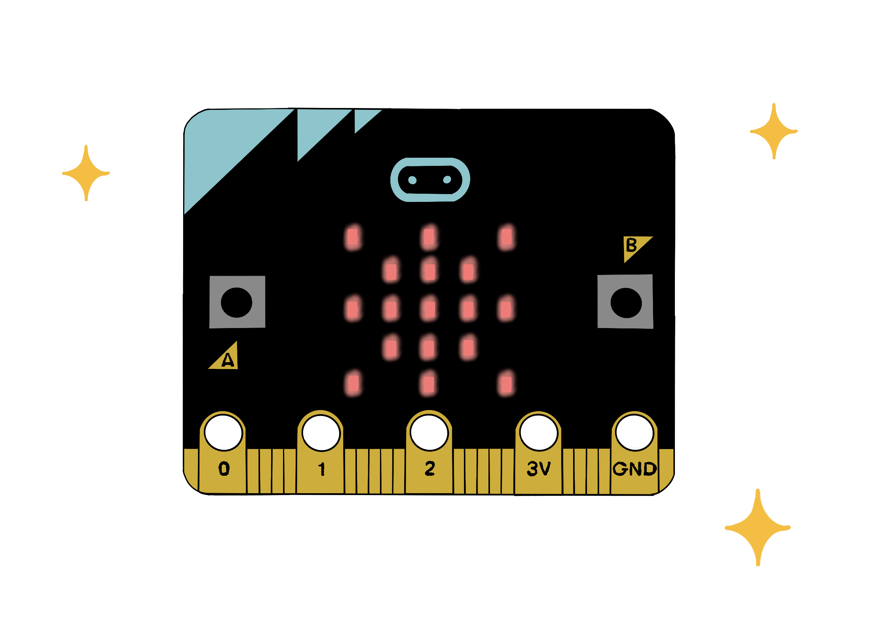

Build a micro:bit signal that helps a student ask for support quietly and clearly. You will create it, test it with another person and improve it using evidence.
The design brief
A student is stuck but does not want to call across the room. Create a two-button prototype that sends a clear message the teacher can understand quickly.
CreateTestImproveExplain
Start your lesson
Enter your details. Your work saves automatically on this device.
Saved work found
Y9
Term 1 · Week 1 ProjectClassroom Help Button
Saved
Teacher preview: all stages are available. Student answers remain separate.
1
Do Now · 6 minutes
A quiet way to ask for help
Meet Aria
Aria is working independently. She has read the instructions twice but still does not understand the next step. The teacher is helping another group. Aria does not want to shout across the room or interrupt.
A small micro:bit on her desk could display a short signal. The signal must be clear from a distance and quick to understand.
What is a micro:bit?
Button A and button B can be programmed as inputs.
The 25 red LEDs form a small screen for pictures, symbols and short messages.
Our program decides what the display should show after a button is pressed.
In simple words: Aria needs help. She presses A or B. The micro:bit program checks the button and shows a signal to the teacher.

Look closely: find buttons A and B and the red LED display. These are the parts used in today’s program.
Think
1. Which signal would work best from across a classroom?
Your own wording is accepted. This box does not look for hidden keywords.
Design
2. Create one signal for a student who wants their work checked
Connect
3. Identify the Input–Processing–Output
The input is what the user does. Processing is the decision the program makes. The output is what the device produces.
2
Reflection stop · 5 minutes
What type of learning did you just use?
Computer Science uses three connected types of learning. This is not a personality test. Choose the type that best describes the thinking you used in the Do Now.
Knowledge
Remember and recognise
Facts, vocabulary and information you can check.
Today: remembering what input, processing and output mean.
Get better by retrieving the words without looking, then checking.Skills
Practise and perform
Actions that become more accurate through practice.
Today: designing a signal and later editing, running and testing code.
Get better by trying, checking the result and repeating one step.Understanding
Connect and explain
Using knowledge in a new situation and explaining why it works.
Today: explaining why one help signal suits Aria better than another.
Get better by linking your reason to the user and the evidence.
Choose, prove, improve
Choose the three boxes to create your Main Task goal.
3
Main Task 1 · 18 minutes
Create and test the first prototype
Your job: Read the program, predict what it will do, run it in the simulator, then make one purposeful change.
A · Read before you run
Class_Name_W1_HelpButton.py
from microbit import *
display.show(Image.HAPPY)
while True:
if button_a.was_pressed():
display.show(Image.CONFUSED)
sleep(700)
display.scroll("STUCK")
display.show(Image.HAPPY)
elif button_b.was_pressed():
display.show(Image.YES)
sleep(700)
display.scroll("CHECK")
display.show(Image.HAPPY)
How to read it
Start at the top.
Find the input: a button press.
Find the condition: what the program checks.
Find the output: the picture or message.
You do not need to memorise every line. Follow one button pathway at a time.
B · Predict, run, compare
A prediction is what you think will happen before running the program. It is allowed to be wrong.
Read the first error message or unexpected result.
Check the named line and the line above it.
Change only one thing.
Run the same button test again.
C · Make one purposeful change
Choose one change that makes the signal clearer, quicker or more useful for Aria.
4
Main Task 2 · 18 minutes
User-test, improve and retest
Your job: Let another person use the prototype without telling them what each signal means. Their response is evidence for your improvement.
A · Choose your test route
Show the physical micro:bit setup guides
Read one guide at a time. Select any image to enlarge it and see the smaller labels clearly.
Guide 1: Check the equipment, connect the cable and wait for the MICROBIT drive.Guide 2: Run the simulator, send the program and wait for the transfer to finish.Guide 3: Test A and B separately, compare results and repeat after a change.
B · Run a fair user test
Tester: press each button once and say what you think the signal means. Coder: do not explain it first; listen and record the answer.
Test
What you expected
What the tester understood
Outcome
Button A
Button B
C · Improve one thing, then repeat the same test
A fair retest changes one main feature and repeats the same button test. This helps you tell whether the change caused the improvement.
tobecause
Finished early? Open the three-level extension lab
Level 1
Clarity audit
Ask two different people to interpret both signals. Record whether their answers match.
Level 2
Add A + B
Add a third signal for “Can I talk privately?” Test A, B and A+B separately.
Level 3
Transfer the design
Redesign the prototype for a library, clinic waiting room or accessibility need. Explain the new user.
5
Learning Pitstop · 4 minutes
Where is your learning now?
Choose the phase that best matches this project right now. It is a temporary learning position, not a label for you.
Your next move will appear here.
Select a learning phase above.
6
Plenary · 5 minutes
Show what the project taught you
1
What is the input?
2
What is the processing?
3
Why repeat the same test?
Explain the improvement
Use your own project evidence, not a general definition.
We assess the meaning of your explanation, not whether it matches a model sentence.
7
Exit Reflection and submission · 5 minutes
Review, export and submit
Learning reflection
Return equipment safely
Your evidence summary
Your completed evidence will appear here.
Export and submit
Choose Download my PDF report.
Open the PDF and check your name and answers.
In Microsoft Teams, open the assignment Week 1 Project.